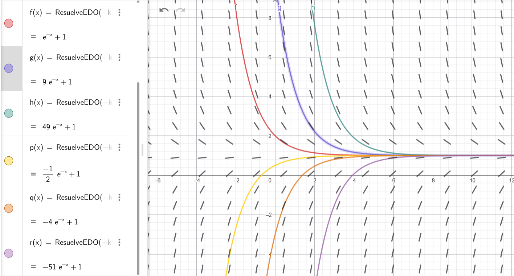
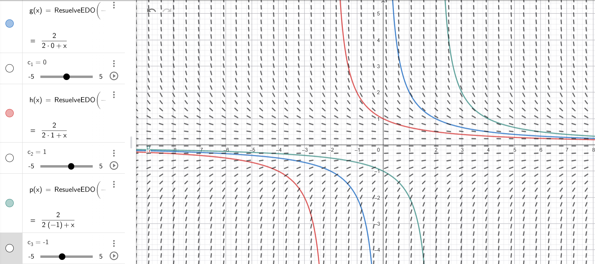
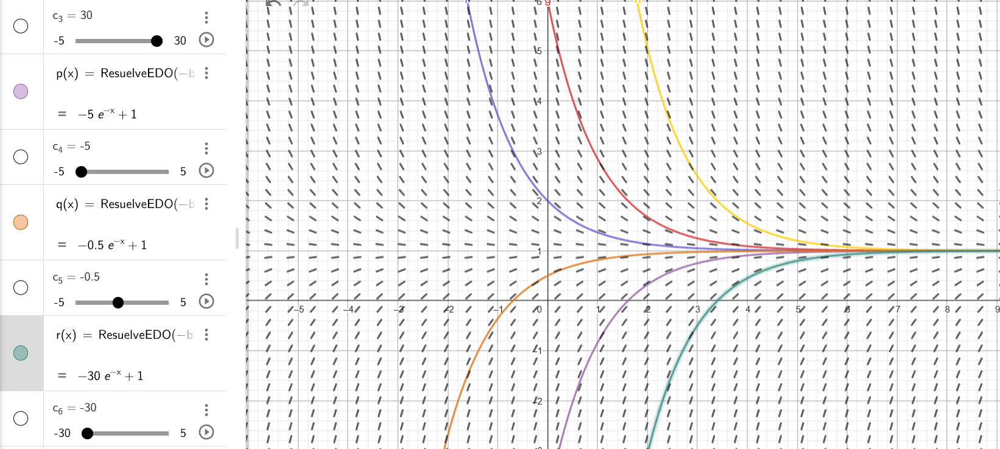
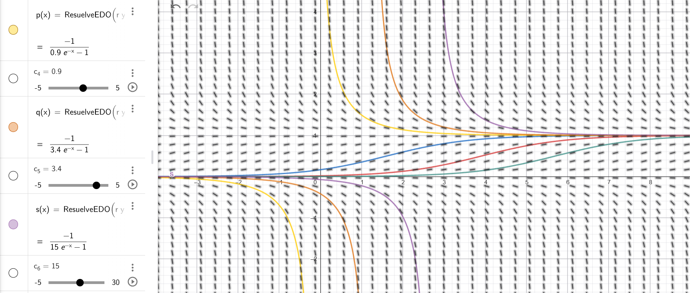

Difusión de Calor (Ley de Enfriamiento de Newton)
Grafique el campo de direcciones para el modelo de difusión de calor según la Ley de Enfriamiento de Newton. La ecuación diferencial es:
Donde (T) es la temperatura del cuerpo, (Tamb) la temperatura ambiente y (k) la constante de enfriamiento. Analice comportamientos para valores de (C) desde (-2) a (2).

Gráfica 1: Campo de direcciones y curvas de solución
Flujo en Tubería Horizontal
Represente las líneas de flujo de la velocidad del fluido en una tubería horizontal utilizando la ecuación:
Donde (v) es la velocidad, (f) el coeficiente de fricción y (D) el diámetro. Explore soluciones para (C) entre (-5) y (5).

Gráfica 2: Líneas de flujo y curvas de solución
Movimiento bajo Fricción Lineal
Grafique el campo de direcciones para el movimiento de una partícula con fricción lineal, usando la ecuación:
Donde (v) es la velocidad, (b) la constante de fricción y (F) una fuerza constante. Evalúe el comportamiento para (C) en el rango dado.

Gráfica 3: Campo de direcciones y análisis de parámetros
Crecimiento Poblacional Logístico
Represente el campo de trayectorias para el modelo de crecimiento poblacional logístico:
Donde (N) es la población, (r) la tasa de crecimiento y (K) la capacidad máxima. Analice comportamientos para (C) desde (0) a (6) en millones de personas.

Gráfica 4: Trayectorias del modelo logístico